- កំណត់សញ្ញាណនៃរង្វង់បានច្បាស់លាស់
- ចង្អុលបង្ហាញមុំផ្ចិតនិងធ្នូបានច្បាស់លាស់
- បកស្រាយទំនាក់ទំនងរវាងមុំផ្ចិតនិងធ្នូ ទំនាក់ទំនងរវាងធ្នូនិងអង្កត់ធ្នូត្រូវគ្នា ។
1. រង្វង់
1.1. និយមន័យ
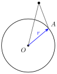
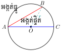
គេឱ្យ \(\displaystyle r\) ជាចំនួនឯកតានៃអង្កត់ បើគេយក \(\displaystyle O\) ជាគល់ តើគេអាចសង់បានអង្កត់ប៉ុន្មានដែលមានប្រវែងស្មើនឹង \(\displaystyle r\)?
គេឃើញថា ក្នុងប្លង់មួយគេអាចគូសអង្កត់បានច្រើនផ្សេងៗគ្នាដែលមានគល់ \(\displaystyle O\) ។ ដើម្បីឱ្យងាយស្រួលជាងនេះ គេប្រើដែកឈានដែលមានគម្លាតប្រវែង \(\displaystyle OA = r\) មកគូស នោះគេបានចំណុចជាប់ៗគ្នាហៅថា រង្វង់ ។
គេបានរង្វង់មួយដែលមានផ្ចិត \(\displaystyle O\) កាំ \(\displaystyle r\) កំណត់ដោយ \(\displaystyle \mathcal{C}(O, r)\) ។
និយមន័យ
រង្វង់ គឺជាខ្សែកោងរាបបិទដែលគ្រប់ចំណុចនៅលើខ្សែកោងនោះ មានចម្ងាយស្មើៗគ្នាពីចំណុចនឹងមួយ ។ ចំណុចនឹងនោះហៅថា ផ្ចិតរង្វង់ ។
1.2. ការកំណត់រង្វង់
ឧទាហរណ៍ 1 ៖ តាមចំណុច \(\displaystyle A\) មួយ គេអាចគូសបានរង្វង់ច្រើនរាប់មិនអស់ ។ ផ្ចិតរង្វង់ទាំងនោះស្ថិតនៅក្នុងប្លង់នៃរូបរបស់វា ។
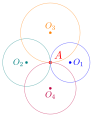
ឧទាហរណ៍ 2 ៖ គេអាចគូសបានរង្វង់ច្រើនរាប់មិនអស់ដែលកាត់តាមពីរចំណុច \(\displaystyle A\) និង \(\displaystyle B\) ។ ផ្ចិតនៃរង្វង់ទាំងនោះស្ថិតនៅលើមេដ្យាទ័រនៃអង្កត់ \(\displaystyle AB\) ។
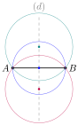
ឧទាហរណ៍ 3 ៖ គេអាចគូសបានរង្វង់តែមួយគត់ ដែលកាត់តាមបីចំណុច \(\displaystyle A\), \(\displaystyle B\) និង \(\displaystyle C\) មិននៅលើបន្ទាត់តែមួយ ។ ផ្ចិតនៃរង្វង់នោះស្ថិតនៅលើប្រសព្វនៃមេដ្យាទ័ររបស់ជ្រុងត្រីកោណ \(\displaystyle ABC\) ។
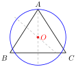
ទ្រឹស្តីបទ
តាមបីចំណុចផ្សេងគ្នាដែលមិនស្ថិតនៅលើបន្ទាត់តែមួយ គេអាចគូសបានរង្វង់តែមួយគត់ដែលកាត់តាមចំណុចទាំងនោះ ។
បើបីចំណុចផ្សេងគ្នាស្ថិតនៅលើបន្ទាត់តែមួយ គេមិនអាចគូសបានរង្វង់ដែលកាត់តាមចំណុចទាំងបីនោះទេ ។
គេមានបីចំណុចផ្សេងគ្នា \(\displaystyle A\), \(\displaystyle B\) និង \(\displaystyle C\) ដែលមិនស្ថិតនៅលើបន្ទាត់តែមួយ (ចំណុចទាំងបីជាកំពូលនៃត្រីកោណ \(\displaystyle ABC\)) ។ បញ្ជាក់ថា ចំណុច \(\displaystyle A\), \(\displaystyle B\) និង \(\displaystyle C\) ស្ថិតនៅលើរង្វង់តែមួយ ។
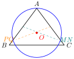
យើងដឹងថាចំណុចដែលមានចម្ងាយស្មើទៅចំណុច \(\displaystyle A\) និង \(\displaystyle C\) ត្រូវស្ថិតនៅលើមេដ្យាទ័រ \(\displaystyle MN\) នៃអង្កត់ \(\displaystyle AC\) ។ ចំណុចដែលមានចម្ងាយស្មើទៅចំណុច \(\displaystyle A\) និង \(\displaystyle B\) ត្រូវស្ថិតនៅលើមេដ្យាទ័រ \(\displaystyle PQ\) នៃអង្កត់ \(\displaystyle AB\) ។ ចំណុចប្រសព្វ \(\displaystyle O\) រវាងមេដ្យាទ័រ \(\displaystyle MN\) និង \(\displaystyle PQ\) ជាចំណុចតែមួយគត់ដែលមានចម្ងាយស្មើទៅចំណុចទាំងបី \(\displaystyle A\), \(\displaystyle B\) និង \(\displaystyle C\) ។ បើ \(\displaystyle O\) ជាចំណុចផ្ចិត ដោយយក \(\displaystyle OA\) ជារង្វាស់កាំរង្វង់ នោះរង្វង់ត្រូវកាត់តាមចំណុច \(\displaystyle A\), \(\displaystyle B\) និង \(\displaystyle C\) ។ ដូច្នេះគេអាចគូសបានរង្វង់តែមួយគត់ដែលកាត់ចំណុច \(\displaystyle A\), \(\displaystyle B\) និង \(\displaystyle C\) ។
គេឱ្យអង្កត់ \(\displaystyle AB\) ដែលមានរង្វាស់ស្មើនឹង \(\displaystyle 6\text{ cm}\) ។ ចូរគូសរង្វង់
- ក. \(\displaystyle \mathcal{C}(A, 2\text{ cm})\) និង \(\displaystyle \mathcal{C}(B, 4\text{ cm})\)
- ខ. \(\displaystyle \mathcal{C}(A, 3\text{ cm})\) និង \(\displaystyle \mathcal{C}(B, 5\text{ cm})\)
- គ. \(\displaystyle \mathcal{C}(A, 1\text{ cm})\) និង \(\displaystyle \mathcal{C}(B, 2\text{ cm})\)
- ឃ. \(\displaystyle \mathcal{C}(A, 4.5\text{ cm})\) និង \(\displaystyle \mathcal{C}(B, 5.5\text{ cm})\) ។
2. មុំផ្ចិតនិងធ្នូ
ឧទាហរណ៍ 1 ៖ គេមានរង្វង់ \(\displaystyle \mathcal{C}(O, r)\) មួយ ។ គូសកន្លះបន្ទាត់ \(\displaystyle Ox\) និង \(\displaystyle Oy\) គេបានមុំពីរគឺ មុំលយ \(\displaystyle \angle xOy\) និងមុំឆក \(\displaystyle \angle xOy\) ដែលមានកំពូលត្រង់ផ្ចិត \(\displaystyle O\) នៃរង្វង់ ។ មុំទាំងពីរនេះហៅថា មុំផ្ចិត ។
ជ្រុង \(\displaystyle Ox\) និង \(\displaystyle Oy\) នៃមុំ \(\displaystyle \angle xOy\) កាត់រង្វង់ត្រង់ចំណុច \(\displaystyle A\) និង \(\displaystyle B\) ។ ចំណុច \(\displaystyle A\) និង \(\displaystyle B\) ហៅថា ចុងធ្នូ ។ គេថាធ្នូដែលមានចុង \(\displaystyle A\) និង \(\displaystyle B\) ជា ធ្នូស្កាត់ដោយមុំផ្ចិត \(\displaystyle \angle xOy\) ។
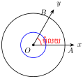
ឧទាហរណ៍ 2 ៖ គេមានធ្នូ \(\displaystyle AB\) និង \(\displaystyle DE\) នៅលើរង្វង់ \(\displaystyle \mathcal{C}(O, r)\) ។ បើគេគូសចម្លងធ្នូ \(\displaystyle DE\) ដោយក្រដាសចម្លងរួចបង្វិល គំនូរចម្លងធ្នូ \(\displaystyle DE\) ដោយឱ្យចំណុច \(\displaystyle D\) ត្រួតលើ \(\displaystyle A\) ។ បើចំណុច \(\displaystyle E\) នៅលើ \(\displaystyle B\) នោះធ្នូ \(\displaystyle DE\) និងធ្នូ \(\displaystyle AB\) ត្រួតស៊ីគ្នាគេថាធ្នូ \(\displaystyle AB\) ស្មើនឹងធ្នូ \(\displaystyle DE\) ហើយមានមុំផ្ចិតដែលស្កាត់ធ្នូទាំងពីរនេះក៏ស្មើគ្នា កាលណាវាត្រួតស៊ីគ្នា ។
ឧទាហរណ៍ 3 ៖ គេមានរង្វង់ \(\displaystyle \mathcal{C}(O, r)\) និងអង្កត់ផ្ចិត \(\displaystyle AB \perp CD\) ។ គេបាន \(\displaystyle \angle AOC = \angle COB = \angle BOD = \angle DOA = 90^\circ\) ជាមុំកែង ហើយធ្នូ \(\displaystyle \overset{\frown}{AC} = \overset{\frown}{CB} = \overset{\frown}{BD} = \overset{\frown}{DA}\) ធ្នូនីមួយៗហៅថា កាដ្រង់ ។
ជាទូទៅ
ក្នុងរង្វង់មួយ ឬរង្វង់ពីរប៉ុនគ្នា ធ្នូពីរប៉ុនគ្នាស្កាត់ដោយមុំផ្ចិតពីរប៉ុនគ្នា ហើយច្រាសមកវិញកាលណាមុំផ្ចិតពីរប៉ុនគ្នានោះធ្នូស្កាត់ទាំងពីរប៉ុនគ្នា ។
ធ្នូមួយដឺក្រេ (\(\displaystyle 1^\circ\)) ជាធ្នូស្កាត់ដោយមុំផ្ចិត (\(\displaystyle 1^\circ\)) ។
នៅលើរង្វង់មានកាំ \(\displaystyle 10\text{ dm}\) ។ តើធ្នូដែលស្កាត់ដោយមុំ \(\displaystyle 36^\circ\) មានប្រវែងប៉ុន្មាន dm?
បរិមាត្ររង្វង់ \(\displaystyle P = 2\pi r = 2 \times 3.14 \times 10 = 62.832\text{ dm}\)
បើ \(\displaystyle 360^\circ \to 62.832\text{ dm}\), \(\displaystyle 36^\circ \to \text{ប្រវែងធ្នូ}\)
ដូច្នេះប្រវែងធ្នូគឺ \(\displaystyle 6.2832\text{ dm}\) ។
នៅលើរង្វង់មានកាំ \(\displaystyle 15\text{ cm}\) ។ តើធ្នូ \(\displaystyle 80^\circ\) នៅលើរង្វង់នេះមានប្រវែងប៉ុន្មាន? (\(\displaystyle \pi = 3.14\))
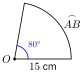
បរិមាត្ររង្វង់ \(\displaystyle P = 2\pi r = 2 \times 3.14 \times 15 = 94.2\text{ cm}\)
ដូច្នេះប្រវែងធ្នូ \(\displaystyle 20.933\text{ cm}\) ។
គេមានរង្វង់មួយមានផ្ចិត \(\displaystyle O\) និងធ្នូពីរមិនប៉ុនគ្នា \(\displaystyle AB\) និង \(\displaystyle CD\) (ធ្នូ \(\displaystyle AB <\) ធ្នូ \(\displaystyle CD\)) ។ គូសមុំផ្ចិត \(\displaystyle \angle AOB\) និង \(\displaystyle \angle COD\) ហើយវាស់មុំទាំងពីរនេះ តើអ្នកសន្និដ្ឋានយ៉ាងណា ចំពោះធ្នូ \(\displaystyle AB\) និងធ្នូ \(\displaystyle CD\)?
2.1. ធ្នូនិងអង្កត់ធ្នូ
ដើម្បីងាយសិក្សា គេកំណត់ធ្នូ \(\displaystyle AB\) ដោយ \(\displaystyle \overset{\frown}{AB}\) និងអង្កត់ធ្នូដោយ \(\displaystyle AB\) ។
ឧទាហរណ៍ 1 ៖ នៅលើរង្វង់មានផ្ចិត \(\displaystyle O\) គេមាន \(\displaystyle \overset{\frown}{AB}\) និង \(\displaystyle \overset{\frown}{MN}\) ។ ធ្នូទាំងពីរអាចត្រួតស៊ីគ្នា បើចំណុច \(\displaystyle A\) ត្រួតលើចំណុច \(\displaystyle M\) និងចំណុច \(\displaystyle B\) ត្រួតលើចំណុច \(\displaystyle N\) ។ គេថា \(\displaystyle \overset{\frown}{AB} = \overset{\frown}{MN}\) នោះគេបានអង្កត់ធ្នូ \(\displaystyle AB\) ត្រួតលើ \(\displaystyle MN\) ជាអង្កត់ធ្នូប៉ុនគ្នា \(\displaystyle AB = MN\)
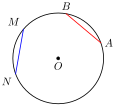
ឧទាហរណ៍ 2 ៖ គេមានអង្កត់ធ្នូ \(\displaystyle AB = CD\) នាំឱ្យចុងធ្នូទាំងពីរត្រួតស៊ីគ្នាគឺចំណុច \(\displaystyle A\) ត្រួតលើចំណុច \(\displaystyle C\) ហើយចំណុច \(\displaystyle B\) ត្រួតលើចំណុច \(\displaystyle D\) ។ ដូច្នេះធ្នូទាំងពីរ \(\displaystyle AB\) និង \(\displaystyle CD\) ប៉ុនគ្នា ។
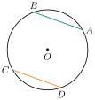
ទ្រឹស្តីបទ
- អង្កត់ផ្ចិត គឺជាអង្កត់ធ្នូដែលធំជាងគេនៅក្នុងរង្វង់មួយ ។
- ក្នុងរង្វង់មួយឬរង្វង់ពីរប៉ុនគ្នា បើធ្នូប៉ុនគ្នា នោះអង្កត់ធ្នូដែលសន្ធឹងធ្នូទាំងពីរនោះក៏ប៉ុនគ្នាដែរ ។ ច្រាសមកវិញបើអង្កត់ធ្នូពីរប៉ុនគ្នា នោះធ្នូដែលសន្ធឹងក្រោមអង្កត់ធ្នូទាំងពីរក៏ប៉ុនគ្នាដែរ ។
គេមានអង្កត់ផ្ចិត \(\displaystyle AB\) និងអង្កត់ធ្នូ \(\displaystyle CD\) ។ ស្រាយបញ្ជាក់ថា \(\displaystyle AB > CD\) ។
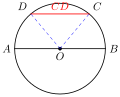
ភ្ជាប់ចំណុច \(\displaystyle O\) និង \(\displaystyle C\), \(\displaystyle O\) និង \(\displaystyle D\)
ក្នុង \(\displaystyle \Delta CDO\) យើងមាន
តាម (1) និង (2) យើងបាន \(\displaystyle AB > CD\)
ដូច្នេះ \(\displaystyle AB > CD\) ។
នៅក្នុងរង្វង់ផ្ចិត \(\displaystyle O\) គេមានអង្កត់ធ្នូ \(\displaystyle MN = PQ\) ។ ស្រាយបញ្ជាក់ថា \(\displaystyle \overset{\frown}{MN} = \overset{\frown}{PQ}\)
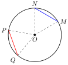
ក្នុង \(\displaystyle \Delta NOM\) និង \(\displaystyle \Delta POQ\) មានជ្រុង
នាំឱ្យ \(\displaystyle \Delta NOM \cong \Delta POQ\) ករណីទី 3 (ជ.ជ.ជ)
វិបាក \(\displaystyle \angle NOM = \angle POQ\)
នាំឱ្យអង្កត់ធ្នូ \(\displaystyle NM = PQ\)
ដូច្នេះ \(\displaystyle \overset{\frown}{MN} = \overset{\frown}{PQ}\) ។
នៅក្នុង \(\displaystyle \mathcal{C}(O, r)\) គេមាន \(\displaystyle \overset{\frown}{AB} > \overset{\frown}{CD}\) ។ ស្រាយបញ្ជាក់ថាអង្កត់ធ្នូ \(\displaystyle AB > CD\) ។
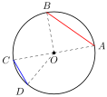
ក្នុង \(\displaystyle \Delta AOB\) និង \(\displaystyle \Delta COD\) មាន
តែមុំនៅចន្លោះជ្រុងទាំងពីរ \(\displaystyle \angle AOB\) និង \(\displaystyle \angle COD\) មិនប៉ុនគ្នា គេបាន \(\displaystyle \angle AOB > \angle COD\) ព្រោះ \(\displaystyle \overset{\frown}{AB} > \overset{\frown}{CD}\)
ដូច្នេះអង្កត់ធ្នូ \(\displaystyle AB > CD\) ។
2.2. លក្ខណៈឆ្លុះនៃរង្វង់
ឧទាហរណ៍ 1 ៖ គេមានរង្វង់ \(\displaystyle \mathcal{C}(O, r)\) បើចំណុច \(\displaystyle B\) និង \(\displaystyle B'\) ជាចំណុចឆ្លុះនៃផ្ចិតរង្វង់ \(\displaystyle \mathcal{C}(O, r)\) នោះគេបាន \(\displaystyle OB = OB'\) (កាំរង្វង់តែមួយ) នាំឱ្យចំណុច \(\displaystyle B\), \(\displaystyle O\) និង \(\displaystyle B'\) រត់ត្រង់គ្នា ។ ដូច្នេះគេថាចំណុច \(\displaystyle B\) ឆ្លុះនិងចំណុច \(\displaystyle B'\) ធៀបនឹងចំណុច \(\displaystyle O\) ។
ឧទាហរណ៍ 2 ៖ គេគូសអង្កត់ផ្ចិតកែងពីរ \(\displaystyle AB\) និង \(\displaystyle CD\) នៅលើក្រដាស បើគេបត់រង្វង់ជាពីរតាមអង្កត់ផ្ចិត \(\displaystyle CD\) នោះគេឃើញថាផ្នែកទាំងពីរនៃ \(\displaystyle CD\) ត្រួតស៊ីគ្នា ដែលចំណុច \(\displaystyle A\) ត្រួតលើចំណុច \(\displaystyle B\) ។ ដោយអង្កត់ \(\displaystyle AB \perp CD\) ហើយ \(\displaystyle OA = OB\) ។ តាមចំណុច \(\displaystyle A\), \(\displaystyle B\) និង \(\displaystyle C\) គេអាចគូសបានរង្វង់តែមួយគត់ ។
ដូច្នេះគ្រប់ផ្នែកទាំងអស់នៃរង្វង់នៅខាងឆ្វេងនៃអង្កត់ \(\displaystyle CD\) ត្រូវតែត្រួតស៊ីគ្នានិងគ្រប់ផ្នែកទាំងអស់នៅខាងស្តាំ ។
ឧទាហរណ៍ 3 ៖ \(\displaystyle P\) ជាចំណុចមួយឋិតនៅលើរង្វង់មានផ្ចិត \(\displaystyle O\) និងកាំ \(\displaystyle r\) ហើយ \(\displaystyle P'\) ជាចំណុចឆ្លុះនៃ \(\displaystyle P\) ធៀបនឹងអង្កត់ផ្ចិត \(\displaystyle AB\) ជាមេដ្យាទ័រនៃអង្កត់ \(\displaystyle PP'\) ។
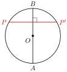
គេបាន \(\displaystyle OP = OP' = r\) នាំឱ្យ \(\displaystyle P'\) ឋិតនៅលើរង្វង់នេះដែរ ។
ជាទូទៅ
- រង្វង់មានផ្ចិតឆ្លុះមួយ គឺជាចំណុចផ្ចិតរបស់វា
- គ្រប់អង្កត់ផ្ចិតទាំងអស់ជាអ័ក្សឆ្លុះនៃរង្វង់
- អង្កត់ផ្ចិតដែលកាត់តាមចំណុចកណ្តាលនៃអង្កត់ធ្នូ កែងនឹងអង្កត់ធ្នូ ហើយចែកធ្នូសន្ធឹងដោយអង្កត់ធ្នូនេះជាពីរផ្នែកប៉ុនគ្នា
- អង្កត់ផ្ចិតដែលកាត់តាមចំណុចកណ្តាលនៃធ្នូមួយ កែងនឹងអង្កត់ធ្នូដែលស្កាត់ធ្នូនេះ ហើយចែកអង្កត់ធ្នូនេះជាពីរផ្នែកប៉ុនគ្នា ។
ស្រាយបញ្ជាក់ថា បើអង្កត់ផ្ចិតមួយកែងទៅនឹងអង្កត់ធ្នូមួយ នោះត្រូវចែកអង្កត់ធ្នូ និងធ្នូស្កាត់ជាពីរផ្នែកប៉ុនគ្នា ។
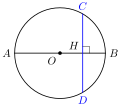
គេមានអង្កត់ \(\displaystyle AB \perp CD\)
បើគេបត់រូបតាមបន្ទាត់ \(\displaystyle AB\) ដែលជាអ័ក្សឆ្លុះនៃរង្វង់ គេបានចំណុច \(\displaystyle C\) ត្រួតលើចំណុច \(\displaystyle D\) នាំឱ្យ \(\displaystyle HC = HD\)
ដូច្នេះ \(\displaystyle CB = DB\) ឬ \(\displaystyle CA = DA\) ។
ស្រាយបញ្ជាក់ថា ធ្នូពីរដែលនៅចន្លោះអង្កត់ធ្នូពីរស្របគ្នាជាធ្នូប៉ុនគ្នា ។
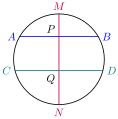
គេមានអង្កត់ធ្នូ \(\displaystyle AB\) និង \(\displaystyle CD\) ស្របគ្នា ។
គូសអង្កត់ផ្ចិត \(\displaystyle MN\) កែងនឹងអង្កត់ \(\displaystyle AB\) និង \(\displaystyle CD\) ត្រង់ចំណុច \(\displaystyle P\) និង \(\displaystyle Q\) រៀងគ្នា ។ គេបានចំណុច \(\displaystyle A\) និង \(\displaystyle B\), \(\displaystyle C\) និង \(\displaystyle D\) ឆ្លុះគ្នាធៀបនឹងអង្កត់ផ្ចិត \(\displaystyle MN\) នាំឱ្យ \(\displaystyle AP = BP\), \(\displaystyle CQ = DQ\)
ដូច្នេះ \(\displaystyle \overset{\frown}{AC} = \overset{\frown}{BD}\) ឆ្លុះគ្នាធៀបនឹងអង្កត់ \(\displaystyle MN\) ជាធ្នូពីរប៉ុនគ្នា ។
គេឱ្យរង្វង់មួយមានផ្ចិត \(\displaystyle O\) និងអង្កត់ផ្ចិត \(\displaystyle AD\) ហើយ \(\displaystyle AB \parallel CD\) ។ បង្ហាញថា \(\displaystyle AB = CD\) ។
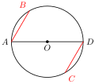
មើលចម្លើយ
ផលវិបាកនៃ \(\displaystyle \Delta OAB \cong \Delta OCD\) ។
លំហាត់
គេឱ្យរង្វង់ \(\displaystyle \mathcal{C}(O, r)\) ដែល \(\displaystyle \angle A = 25^\circ\) ។ គណនាធ្នូ \(\displaystyle BC\) ។
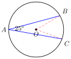
មើលដំណោះស្រាយ
ដំណោះស្រាយ
មុំ \(\displaystyle \angle BAC\) ជាមុំចារឹកក្នុងរង្វង់ដែលស្កាត់ធ្នូ \(\displaystyle \overset{\frown}{BC}\) ។
តាមទ្រឹស្តីបទមុំចារឹកក្នុងរង្វង់ ៖\[\angle BAC = \frac{1}{2}\overset{\frown}{BC}\]\[25^\circ = \frac{1}{2}\overset{\frown}{BC} \implies \overset{\frown}{BC} = 2 \times 25^\circ = 50^\circ\](មុំផ្ចិតត្រូវគ្នា \(\displaystyle \angle BOC = 50^\circ\)) ។
ដូចនេះ រង្វាស់ធ្នូ \(\displaystyle \overset{\frown}{BC} = 50^\circ\) ។គេឱ្យរង្វង់ \(\displaystyle \mathcal{C}(O, r)\) ដែល \(\displaystyle \overset{\frown}{AD} = \overset{\frown}{CB}\) ។ ស្រាយបញ្ជាក់ថាអង្កត់ធ្នូ \(\displaystyle AC = BD\) ។
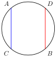
មើលដំណោះស្រាយ
ដំណោះស្រាយ
តាមបម្រាប់ យើងមាន \(\displaystyle \overset{\frown}{AD} = \overset{\frown}{CB}\) ។
បូកធ្នូរួម \(\displaystyle \overset{\frown}{DC}\) លើអង្គទាំងសងខាង ៖\[\overset{\frown}{AD} + \overset{\frown}{DC} = \overset{\frown}{CB} + \overset{\frown}{DC}\]\[\overset{\frown}{AC} = \overset{\frown}{DB}\]ដោយធ្នូពីរប៉ុនគ្នា នោះអង្កត់ធ្នូដែលសន្ធឹងធ្នូទាំងពីរក៏ប៉ុនគ្នាដែរ ៖
\[AC = BD \quad \text{(ពិត)}\]គេឱ្យរង្វង់ \(\displaystyle \mathcal{C}(O, r)\) ដែលអង្កត់ធ្នូ \(\displaystyle AB = CD\) ស្រាយបញ្ជាក់ថា \(\displaystyle \overset{\frown}{AC} = \overset{\frown}{BD}\) ។
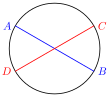
មើលដំណោះស្រាយ
ដំណោះស្រាយ
ដោយអង្កត់ធ្នូ \(\displaystyle AB = CD\) នោះធ្នូដែលសន្ធឹងក្រោមអង្កត់ធ្នូទាំងពីរក៏ប៉ុនគ្នាដែរ ៖\[\overset{\frown}{AB} = \overset{\frown}{CD}\]យើងអាចបំបែកធ្នូទាំងពីរដោយកាត់តាមចំណុចរួម \(\displaystyle C\) និង \(\displaystyle B\) ៖
\[\overset{\frown}{AC} + \overset{\frown}{CB} = \overset{\frown}{CB} + \overset{\frown}{BD}\]ដកធ្នូរួម \(\displaystyle \overset{\frown}{CB}\) ចេញពីអង្គទាំងពីរ ៖
\[\overset{\frown}{AC} = \overset{\frown}{BD} \quad \text{(ពិត)}\]គេឱ្យរង្វង់ផ្ចិត \(\displaystyle O\) ដែល \(\displaystyle OQ = OR\) ហើយ \(\displaystyle AB = 6x + 14\) និង \(\displaystyle CD = -4x + 4\) ។ គណនាប្រវែងអង្កត់ធ្នូ \(\displaystyle AB\) និង \(\displaystyle CD\) ។
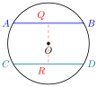
មើលដំណោះស្រាយ
ដំណោះស្រាយ
ដោយ \(\displaystyle OQ \perp AB\) និង \(\displaystyle OR \perp CD\) ហើយ \(\displaystyle OQ = OR\) មានន័យថាអង្កត់ធ្នូទាំងពីរមានចម្ងាយស្មើគ្នាពីផ្ចិត \(\displaystyle O\) ។
តាមទ្រឹស្តីបទ អង្កត់ធ្នូទាំងពីរត្រូវមានប្រវែងស្មើគ្នា ៖\[AB = CD\]\[6x + 14 = -4x + 4\]\[6x + 4x = 4 - 14\]\[10x = -10 \implies x = -1\]គណនាប្រវែងអង្កត់ធ្នូ ៖
\[AB = 6(-1) + 14 = -6 + 14 = 8\text{ cm}\]\[CD = -4(-1) + 4 = 4 + 4 = 8\text{ cm}\]ដូចនេះ \(\displaystyle AB = CD = 8\text{ cm}\) ។
គេឱ្យរង្វង់ \(\displaystyle \mathcal{C}(O, r)\) ដែលអង្កត់ធ្នូ \(\displaystyle AB = CD\) ។ បង្ហាញថា \(\displaystyle \overset{\frown}{BD} = \overset{\frown}{AC}\) ។
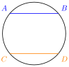
មើលដំណោះស្រាយ
ដំណោះស្រាយ
ដោយអង្កត់ធ្នូ \(\displaystyle AB = CD\) នាំឱ្យធ្នូដែលត្រូវគ្នាប៉ុនគ្នា ៖\[\overset{\frown}{AB} = \overset{\frown}{CD}\]យើងមាន \(\displaystyle \overset{\frown}{AB} = \overset{\frown}{AC} + \overset{\frown}{CB}\) និង \(\displaystyle \overset{\frown}{CD} = \overset{\frown}{CB} + \overset{\frown}{BD}\) ៖
\[\overset{\frown}{AC} + \overset{\frown}{CB} = \overset{\frown}{CB} + \overset{\frown}{BD}\]ដកធ្នូរួម \(\displaystyle \overset{\frown}{CB}\) ចេញ ៖
\[\overset{\frown}{AC} = \overset{\frown}{BD} \quad \text{ឬ} \quad \overset{\frown}{BD} = \overset{\frown}{AC} \quad \text{(ពិត)}\]គេមានត្រីកោណសម័ង្ស \(\displaystyle ABC\) និង \(\displaystyle I\), \(\displaystyle J\), \(\displaystyle K\) ជាចំណុចកណ្តាលរៀងគ្នានៃអង្កត់ \(\displaystyle AB\), \(\displaystyle BC\) និង \(\displaystyle CA\) ។ ស្រាយបញ្ជាក់ថាចំណុចទាំងបួន \(\displaystyle I\), \(\displaystyle J\), \(\displaystyle C\) នៅលើរង្វង់តែមួយដែលមានផ្ចិត \(\displaystyle J\) ។
មើលដំណោះស្រាយ
ដំណោះស្រាយ
ក្នុងត្រីកោណសម័ង្ស \(\displaystyle ABC\) ៖- \(\displaystyle I\) ជាចំណុចកណ្តាលនៃ \(\displaystyle AB \implies CI\) ជាមេដ្យាន និងជាកម្ពស់ \(\displaystyle \implies CI \perp AB\) ត្រង់ \(\displaystyle I\) ។
- ត្រីកោណ \(\displaystyle CIB\) ជាត្រីកោណកែងត្រង់ \(\displaystyle I\) ដែលមានអ៊ីប៉ូតេនុស \(\displaystyle BC\) ។
- \(\displaystyle J\) ជាចំណុចកណ្តាលនៃអ៊ីប៉ូតេនុស \(\displaystyle BC \implies JI = JB = JC = \frac{1}{2}BC\) ។
ដោយ \(\displaystyle JI = JC = JB\) នោះចំណុច \(\displaystyle I, B, C\) ស្ថិតនៅលើរង្វង់តែមួយដែលមានផ្ចិត \(\displaystyle J\) និងកាំ \(\displaystyle R = \frac{1}{2}BC\) ។
ចតុកោណ \(\displaystyle ABCD\) មានអង្កត់ទ្រូងទាំងពីរកែងគ្នា ។ \(\displaystyle M\), \(\displaystyle N\), \(\displaystyle R\), \(\displaystyle S\) ជាចំណុចកណ្តាលរៀងនៃអង្កត់ \(\displaystyle AB\), \(\displaystyle BC\), \(\displaystyle CD\), \(\displaystyle DA\) ។ ស្រាយបញ្ជាក់ថា ចំណុចទាំងបួននៅលើរង្វង់តែមួយ ។
មើលដំណោះស្រាយ
ដំណោះស្រាយ
តាមទ្រឹស្តីបទបាតមធ្យមក្នុងត្រីកោណ (ទ្រឹស្តីបទវ៉ារីញ៉ុង) ៖- ក្នុង \(\displaystyle \Delta ABC\) ៖ \(\displaystyle MN \parallel AC\) និង \(\displaystyle MN = \frac{1}{2}AC\)
- ក្នុង \(\displaystyle \Delta ADC\) ៖ \(\displaystyle SR \parallel AC\) និង \(\displaystyle SR = \frac{1}{2}AC\) \(\displaystyle \implies MN \parallel SR\) និង \(\displaystyle MN = SR\) ។
- ក្នុង \(\displaystyle \Delta ABD\) ៖ \(\displaystyle MS \parallel BD\) និង \(\displaystyle MS = \frac{1}{2}BD\)
ដោយអង្កត់ទ្រូង \(\displaystyle AC \perp BD\) ហើយ \(\displaystyle MN \parallel AC\), \(\displaystyle MS \parallel BD\) នាំឱ្យ \(\displaystyle MN \perp MS\) ត្រង់ \(\displaystyle M\) (\(\displaystyle \angle NMS = 90^\circ\)) ។
ដូចនេះចតុកោណ \(\displaystyle MNRS\) ជា ចតុកោណកែង ។
ដោយគ្រប់ចតុកោណកែងសុទ្ធតែជាចតុកោណចារឹកក្នុងរង្វង់ (អង្កត់ទ្រូងទាំងពីរកាត់គ្នាត្រង់ចំណុចកណ្តាល \(\displaystyle O\) និងមានប្រវែងស្មើគ្នា) នោះចំណុចទាំងបួន \(\displaystyle M, N, R, S\) ស្ថិតនៅលើរង្វង់តែមួយដែលមានអង្កត់ផ្ចិតជាអង្កត់ទ្រូងនៃចតុកោណកែងនោះ ។គេមានកន្លះរង្វង់ដែលមានផ្ចិត \(\displaystyle AB\) និងអង្កត់ធ្នូ \(\displaystyle CD\) មួយ ។ គូសអង្កត់ \(\displaystyle AP\) និង \(\displaystyle DS\) កែងនឹងអង្កត់ \(\displaystyle CD\) ។ ស្រាយបញ្ជាក់ថាអង្កត់ \(\displaystyle PC = DS\) ។
មើលដំណោះស្រាយ
ដំណោះស្រាយ
ទម្លាក់ចំណុចកែងពីផ្ចិត \(\displaystyle O\) ទៅលើអង្កត់ធ្នូ \(\displaystyle CD\) ត្រង់ \(\displaystyle H\) ៖ \(\displaystyle OH \perp CD\) ។- ដោយ \(\displaystyle OH \perp CD\) តាមទ្រឹស្តីបទផ្ចិតកែងនឹងអង្កត់ធ្នូ \(\displaystyle H\) ជាចំណុចកណ្តាលនៃអង្កត់ធ្នូ \(\displaystyle CD \implies HC = HD\) ។
- ពិនិត្យបន្ទាត់កែង \(\displaystyle AP \perp CD\), \(\displaystyle OH \perp CD\), \(\displaystyle BS \perp CD\) ដែលស្របគ្នាទាំងអស់ ។
- \(\displaystyle O\) ជាចំណុចកណ្តាលនៃអង្កត់ផ្ចិត \(\displaystyle AB\) នោះ \(\displaystyle OH\) ជាបាតមធ្យមនៃចតុកោណព្នាយ \(\displaystyle ABSP\) នាំឱ្យ \(\displaystyle H\) ជាចំណុចកណ្តាលនៃអង្កត់ \(\displaystyle PS \implies HP = HS\) ។
យើងបាន ៖
\[HP - HC = HS - HD \implies PC = DS \quad \text{(ពិត)}\]គេមានរង្វង់ \(\displaystyle \mathcal{C}(O, r)\) និងចំណុច \(\displaystyle P\) នៅក្នុងរង្វង់នេះ ។ ស្រាយបញ្ជាក់ថា ក្នុងចំណោមអង្កត់ដែលកាត់តាមចំណុច \(\displaystyle P\) មានរង្វាស់ខ្លីជាងគេ ។
មើលដំណោះស្រាយ
ដំណោះស្រាយ
តាង \(\displaystyle CD\) ជាអង្កត់ធ្នូកាត់តាម \(\displaystyle P\) ហើយកែងនឹង \(\displaystyle OP\) ត្រង់ \(\displaystyle P\) (\(\displaystyle OP \perp CD\)) ។
តាង \(\displaystyle AB\) ជាអង្កត់ធ្នូផ្សេងទៀតណាមួយដែលកាត់តាម \(\displaystyle P\) មិនកែងនឹង \(\displaystyle OP\) ។
ទម្លាក់ \(\displaystyle OH \perp AB\) ត្រង់ \(\displaystyle H\) ។ ក្នុងត្រីកោណកែង \(\displaystyle OHP\) (កែងត្រង់ \(\displaystyle H\)) ៖\[OH < OP \quad (\text{ជ្រុងមុំកែងតូចជាងអ៊ីប៉ូតេនុស})\]ប្រវែងអង្កត់ធ្នូទាំងពីរគឺ ៖
\[CD = 2\sqrt{r^2 - OP^2} \quad \text{និង} \quad AB = 2\sqrt{r^2 - OH^2}\]ដោយ \(\displaystyle OH < OP \implies OH^2 < OP^2 \implies r^2 - OH^2 > r^2 - OP^2\)
\(\displaystyle \implies 2\sqrt{r^2 - OH^2} > 2\sqrt{r^2 - OP^2} \implies AB > CD\) ។
ដូចនេះ អង្កត់ធ្នូដែលកាត់តាម \(\displaystyle P\) ហើយកែងនឹង \(\displaystyle OP\) គឺជាអង្កត់ធ្នូដែលមានរង្វាស់ខ្លីជាងគេបំផុត ។គេមានរង្វង់ផ្ចិត \(\displaystyle O\) ។ អង្កត់ធ្នូ \(\displaystyle AB\) និង \(\displaystyle CD\) ដែល (\(\displaystyle AB > CD\)) កាត់គ្នាត្រង់ចំណុច \(\displaystyle K\) មួយនៅក្រៅរង្វង់ ។ \(\displaystyle H\) និង \(\displaystyle P\) ជាចំណុចកណ្តាលរៀងនៃអង្កត់ \(\displaystyle AB\) និង \(\displaystyle CD\) ។
- ក. ស្រាយបញ្ជាក់ថា ចំណុចកណ្តាលនៃអង្កត់ \(\displaystyle OK\) មានចម្ងាយស្មើទៅនឹងចំណុច \(\displaystyle O\), \(\displaystyle K\), \(\displaystyle P\), \(\displaystyle H\) ។
- ខ. ប្រៀបធៀប \(\displaystyle \angle HKO\) និង \(\displaystyle \angle PKO\) ។
- គ. ប្រៀបធៀប \(\displaystyle KH\) និង \(\displaystyle KP\) ។
មើលដំណោះស្រាយ
ដំណោះស្រាយ
- ក.
ចំណុចកណ្តាលនៃអង្កត់ \(\displaystyle OK\) ៖
ដោយ \(\displaystyle H\) ជាចំណុចកណ្តាលនៃអង្កត់ធ្នូ \(\displaystyle AB \implies OH \perp AB\) ត្រង់ \(\displaystyle H \implies \angle OHK = 90^\circ\) ។
ដោយ \(\displaystyle P\) ជាចំណុចកណ្តាលនៃអង្កត់ធ្នូ \(\displaystyle CD \implies OP \perp CD\) ត្រង់ \(\displaystyle P \implies \angle OPK = 90^\circ\) ។
ត្រីកោណកែង \(\displaystyle \Delta OHK\) និង \(\displaystyle \Delta OPK\) មានអ៊ីប៉ូតេនុសរួម \(\displaystyle OK\) ។
តាង \(\displaystyle M\) ជាចំណុចកណ្តាលនៃ \(\displaystyle OK\) នោះ ៖\[MO = MK = MH = MP = \frac{1}{2}OK\]ដូចនេះ ចំណុចកណ្តាល \(\displaystyle M\) នៃ \(\displaystyle OK\) មានចម្ងាយស្មើគ្នាទៅចំណុចទាំងបួន \(\displaystyle O, K, P, H\) ។
- ខ.
ប្រៀបធៀប \(\displaystyle \angle HKO\) និង \(\displaystyle \angle PKO\) ៖
ដោយអង្កត់ធ្នូ \(\displaystyle AB > CD\) នាំឱ្យអង្កត់ធ្នូ \(\displaystyle AB\) ស្ថិតនៅកៀកផ្ចិតជាង \(\displaystyle CD\) ៖ \(\displaystyle OH < OP\) ។
ក្នុងត្រីកោណកែង \(\displaystyle \Delta OHK\) និង \(\displaystyle \Delta OPK\) ៖\[\sin \angle HKO = \frac{OH}{OK} < \frac{OP}{OK} = \sin \angle PKO\]ដោយមុំទាំងពីរជាមុំស្រួច នាំឱ្យ \(\displaystyle \angle HKO < \angle PKO\) ។
- គ.
ប្រៀបធៀប \(\displaystyle KH\) និង \(\displaystyle KP\) ៖
តាមទ្រឹស្តីបទពីតាគ័រ ៖\[KH = \sqrt{OK^2 - OH^2} \quad \text{និង} \quad KP = \sqrt{OK^2 - OP^2}\]ដោយ \(\displaystyle OH < OP \implies OH^2 < OP^2 \implies OK^2 - OH^2 > OK^2 - OP^2 \implies KH > KP\) ។
គេឱ្យរង្វង់មួយមានអង្កត់ផ្ចិត \(\displaystyle BC\) និងចំណុច \(\displaystyle A\) មួយនៅក្រៅរង្វង់ ។ បន្ទាត់ \(\displaystyle AB\) និង \(\displaystyle AC\) ជួបរង្វង់នេះត្រង់ \(\displaystyle P\) និង \(\displaystyle Q\) ។ គេយកចំណុច \(\displaystyle M\) ប្រសព្វនៃបន្ទាត់ \(\displaystyle BQ\) និង \(\displaystyle CP\) ។ តើចំណុច \(\displaystyle M\) តាងអ្វីចំពោះត្រីកោណ \(\displaystyle ABC\)?
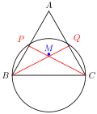
មើលដំណោះស្រាយ
ដំណោះស្រាយ
ដោយ \(\displaystyle BC\) ជាអង្កត់ផ្ចិតនៃរង្វង់ ៖- មុំ \(\displaystyle \angle BPC\) ជាមុំចារឹកក្នុងកន្លះរង្វង់ នាំឱ្យ \(\displaystyle \angle BPC = 90^\circ \implies CP \perp AB\) ។ ដូចនេះ \(\displaystyle CP\) ជាកម្ពស់គូសចេញពីកំពូល \(\displaystyle C\) នៃ \(\displaystyle \Delta ABC\) ។
- មុំ \(\displaystyle \angle BQC\) ជាមុំចារឹកក្នុងកន្លះរង្វង់ នាំឱ្យ \(\displaystyle \angle BQC = 90^\circ \implies BQ \perp AC\) ។ ដូចនេះ \(\displaystyle BQ\) ជាកម្ពស់គូសចេញពីកំពូល \(\displaystyle B\) នៃ \(\displaystyle \Delta ABC\) ។
ចំណុច \(\displaystyle M\) ជាចំណុចប្រសព្វនៃកម្ពស់ទាំងពីរ \(\displaystyle CP\) និង \(\displaystyle BQ\) នៃត្រីកោណ \(\displaystyle ABC\) ។
ដូចនេះ ចំណុច \(\displaystyle M\) គឺជា អរតូសង់ (Orthocenter - ប្រសព្វនៃកម្ពស់) នៃត្រីកោណ \(\displaystyle ABC\) ។គូសអង្កត់ \(\displaystyle [AB]\) មានប្រវែង \(\displaystyle 8\text{ cm}\) រួចសង់មេដ្យាទ័រ \(\displaystyle (d)\) នៃ \(\displaystyle [AB]\) នៅលើ \(\displaystyle (d)\) ដៅចំណុច \(\displaystyle E\) មួយមានចម្ងាយ \(\displaystyle 5\text{ cm}\) ពី \(\displaystyle B\)
- ក. សង់ចំណុច \(\displaystyle C\) និង \(\displaystyle D\) ឆ្លុះនៃ \(\displaystyle A\) និង \(\displaystyle B\) ធៀបនឹង \(\displaystyle E\)
- ខ. រកផ្ចិតនៃរង្វង់ចារឹកក្រៅត្រីកោណ \(\displaystyle ABD\) និង ត្រីកោណ \(\displaystyle ABC\) ។
មើលដំណោះស្រាយ
ដំណោះស្រាយ
- ក.
សង់ចំណុច \(\displaystyle C\) និង \(\displaystyle D\) ៖
ដោយ \(\displaystyle E\) នៅលើមេដ្យាទ័រ \(\displaystyle (d)\) នៃ \(\displaystyle [AB]\) នោះ \(\displaystyle EA = EB = 5\text{ cm}\) ។- \(\displaystyle C\) ជាចំណុចឆ្លុះនៃ \(\displaystyle A\) ធៀបនឹង \(\displaystyle E \implies E\) ជាចំណុចកណ្តាលនៃ \(\displaystyle AC \implies EA = EC = 5\text{ cm}\) ។
- \(\displaystyle D\) ជាចំណុចឆ្លុះនៃ \(\displaystyle B\) ធៀបនឹង \(\displaystyle E \implies E\) ជាចំណុចកណ្តាលនៃ \(\displaystyle BD \implies EB = ED = 5\text{ cm}\) ។
- ខ.
រកផ្ចិតនៃរង្វង់ចារឹកក្រៅ \(\displaystyle \Delta ABD\) និង \(\displaystyle \Delta ABC\) ៖
- ចំពោះត្រីកោណ \(\displaystyle ABD\) ៖ យើងមាន \(\displaystyle EA = EB = ED = 5\text{ cm}\) ។
ចំណុច \(\displaystyle E\) មានចម្ងាយស្មើគ្នាពីកំពូលទាំងបី \(\displaystyle A, B, D\) ។
ដូចនេះ \(\displaystyle E\) គឺជា ផ្ចិតនៃរង្វង់ចារឹកក្រៅត្រីកោណ \(\displaystyle ABD\) ដែលមានកាំ \(\displaystyle R = 5\text{ cm}\) ។ - ចំពោះត្រីកោណ \(\displaystyle ABC\) ៖ យើងមាន \(\displaystyle EA = EB = EC = 5\text{ cm}\) ។
ចំណុច \(\displaystyle E\) មានចម្ងាយស្មើគ្នាពីកំពូលទាំងបី \(\displaystyle A, B, C\) ។
ដូចនេះ \(\displaystyle E\) ក៏ជា ផ្ចិតនៃរង្វង់ចារឹកក្រៅត្រីកោណ \(\displaystyle ABC\) ដែលមានកាំ \(\displaystyle R = 5\text{ cm}\) ផងដែរ ។
- ចំពោះត្រីកោណ \(\displaystyle ABD\) ៖ យើងមាន \(\displaystyle EA = EB = ED = 5\text{ cm}\) ។
ខ្លឹមសារ៖ សៀវភៅពុម្ពគណិតវិទ្យាថ្នាក់ទី៨ របស់ក្រសួងអប់រំ យុវជន និងកីឡា · វាយអត្ថបទ គូររូបភាពឡើងវិញ និងរៀបចំលើអនឡាញដោយលោកគ្រូ សាន សុខលី សម្រាប់ការសិក្សាដោយឥតគិតថ្លៃ និងមិនរកប្រាក់ចំណេញ។ មិនមែនជាការបោះពុម្ពផ្លូវការរបស់ក្រសួងទេ។